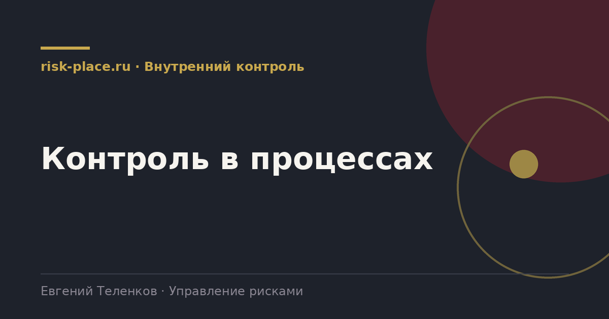

risk-
risk-Описать процесс как есть
- Не как в регламенте, а как выполняется. Наблюдение и разговор с исполнителями, а не чтение документов
Главная · Библиотека · Внутренний контроль · Контроль в процессах
Библиотека · Внутренний контроль
Контроль, стоящий рядом с процессом, всегда проигрывает скорости. Контроль внутри процесса выполняется сам собой.

Контроль стоит рядом, когда его выполнение требует отдельного действия, о котором надо помнить. Сотрудник заполнил заявку, отправил, а потом должен зайти в другой файл и отметить, что проверил лимит. Такой контроль деградирует за три месяца.
Контроль встроен, когда его невозможно обойти, не остановив процесс. Заявка не уходит дальше, пока не подставлен и не проверен лимит, а система не дает продолжить. Дисциплина здесь не требуется, требуется только правильно спроектированный маршрут.
Как это делается на практике.
Ориентир для быстрого поиска.
Основное возражение бизнеса против контроля справедливо, каждый контроль стоит времени. Три приема, которые снимают это возражение.
Первый, риск-ориентированность порогов. Сплошной контроль применяется только выше существенной суммы, ниже работает выборка или автоматическая проверка. Второй, замена согласований на правила. Вместо визы руководителя на каждой операции задается правило, а виза требуется только при выходе за его границы. Третий, перенос контроля на данные. Вместо проверки каждой операции человеком строится отчет об исключениях, который проверяется целиком и занимает минуты. Все три приема снижают нагрузку и одновременно повышают надежность, потому что человек проверяет не поток, а отклонения.
Частые вопросы
Одна форма для любого вопроса
Расскажем о ближайших датах, предложим формат под ваш состав участников и назовем порядок бюджета.
Предпочитаете почту — напишите на info@risk-place.ru. Адрес: Москва, улица Скаковая, 32с2.